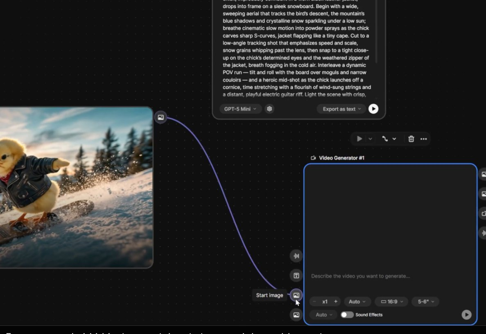
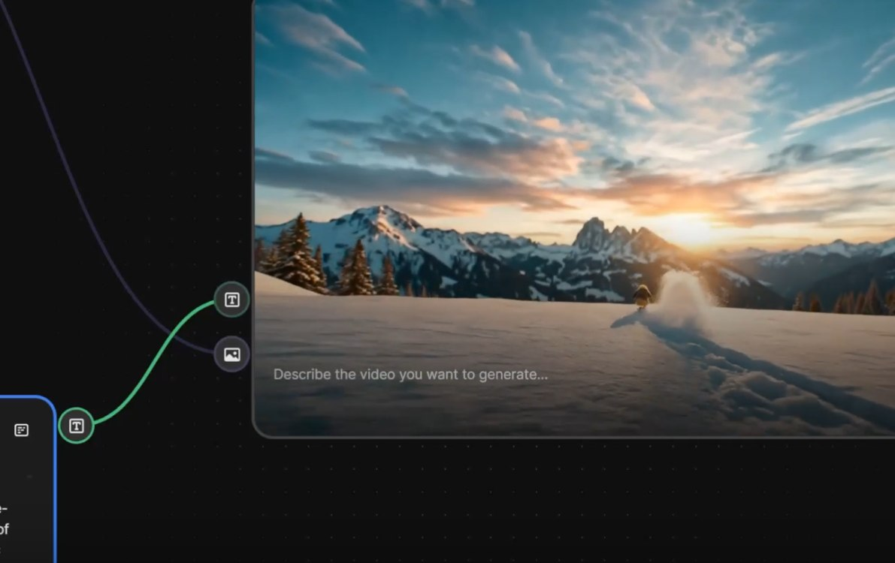
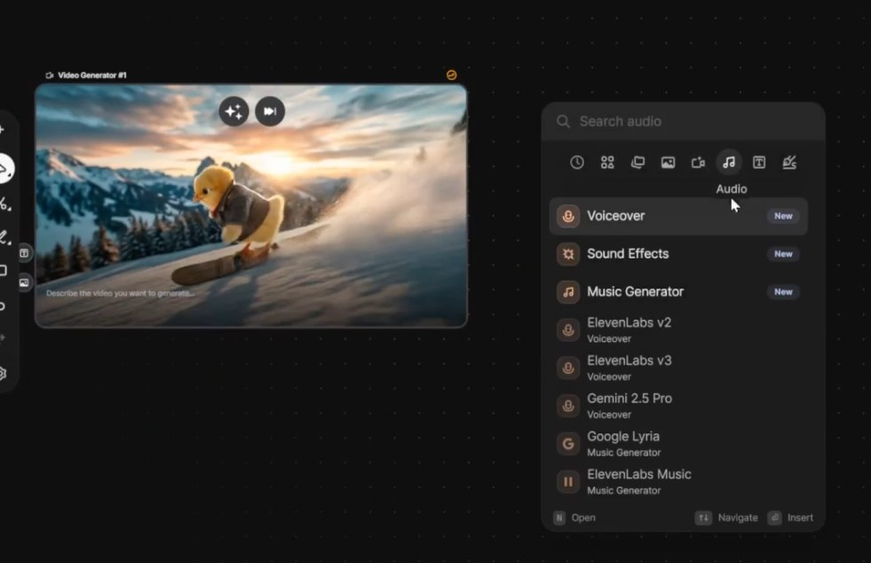

Video Generator no Freepik — galeria de storyboard com múltiplos frames do carro 4x4, modelo Kling selecionado, vários clips gerados em paralelo

Video Generator Node configurado no Spaces

Resultado — clip gerado com movimento cinematográfico
🎥 Modelos de Vídeo Disponíveis
Em Abril de 2026, o Freepik oferece acesso aos melhores modelos de geração de vídeo do mercado em um único lugar — sem precisar de contas separadas em Kling, Runway ou Google.
Kling 2.1 / 3.0 Omni
Melhor preservação de personagem e rostos. Movimento realista e físico convincente.
Google Veo 3 / 3.1
Cinematográfico com geração de áudio nativo. O único modelo que cria vídeo com som direto.
Runway Gen 4 / 4.5
Mais rápido para iteração. Ideal para prototipagem e aprovação de animatic antes de geração final.
Sora 2
Melhor para planos longos e cenas complexas com múltiplos elementos em movimento simultâneo.
Seedance 1.5 Pro
Estilo artístico e estilizado. Ótimo para produções com estética não-realista, animações e videoclipes.
🔀 Text-to-Video vs Image-to-Video
Existem duas abordagens para gerar vídeo com IA: Text-to-Video (T2V) parte de um prompt de texto puro, e Image-to-Video (I2V) anima uma imagem existente como primeiro frame.
📝 Text-to-Video (T2V)
Gera vídeo diretamente a partir de um prompt de texto. Mais criativo e imprevisível.
Melhor para: explorar conceitos, testar composições, cenas sem personagem específico.
- ✓ Mais rápido para começar
- ✓ Resultado inesperado pode surpreender positivamente
- ✗ Menos controle sobre a composição final
- ✗ Personagens inconsistentes entre cenas
🖼️ Image-to-Video (I2V)
Anima uma imagem existente. O primeiro frame é fixo; o modelo adiciona movimento.
Melhor para: filmes com personagens consistentes, quando o primeiro frame precisa ser exato.
- ✓ Controle máximo da composição inicial
- ✓ Personagem idêntico ao gerado no Image Generator
- ✓ Resultado mais previsível e controlável
- ✗ Requer uma imagem de qualidade como input
💡 Recomendação para Filmes
Use Image-to-Video para 90% das cenas de um filme com personagens. O pipeline ideal é: gerar o frame no Image Generator → aprovar → converter em vídeo com I2V. O T2V fica reservado para cenas de ambiente sem personagem principal.
⏱️ Duração e Aspect Ratio
Clips de vídeo gerado por IA têm duração máxima de 8 segundos. Um filme inteiro é montado a partir do encadeamento de múltiplos clips na edição final.
📐 Planejamento de Clips
🏅 Guia de Modelos de Vídeo
A decisão sobre qual modelo usar para cada cena impacta diretamente a qualidade, o custo em créditos e o tempo de geração. Use este guia antes de cada rodada de produção.
Cena com personagem principal em movimento
Modelo: Kling 3.0 Omni
Melhor preservação de rostos e movimentos corporais naturais. Evita o "efeito boneca" comum em outros modelos.
Cena cinematográfica com qualidade máxima + som
Modelo: Google Veo 3.1
O único que gera áudio ambiente junto com o vídeo. Ideal para cenas onde o som é parte da composição (chuva, multidão, natureza).
Prototipagem rápida de animatic
Modelo: Runway Gen 4.5
Mais rápido para gerar. Use para aprovar composição e movimento antes de investir créditos em Kling ou Veo.
Planos longos com múltiplos elementos
Modelo: Sora 2
Melhor coerência temporal em cenas longas (8s) com vários objetos em movimento simultâneo.
✍️ Prompts para Vídeo
Prompts de vídeo têm uma estrutura específica diferente dos prompts de imagem. Descrever o movimento de câmera e a ação é tão importante quanto descrever o sujeito.
🎬 Fórmula de Prompt Cinematográfico
📷 Tipos de Plano
- ECU — Extreme Close-Up
- CU — Close-Up
- MS — Medium Shot
- WS — Wide Shot
- EWS — Extreme Wide Shot
- POV — Point of View
🎥 Movimentos de Câmera
- Dolly in / dolly out
- Pan left / pan right
- Tilt up / tilt down
- Crane up / crane down
- Handheld shaky
- Tracking shot / follow
🔁 Iteração Eficiente
Raramente o primeiro vídeo gerado é o aprovado. Iterar eficientemente — ajustando apenas o que está errado — evita desperdício de créditos e acelera a produção.

Painel de configuração avançada do Video Generator — parâmetros de iteração e ajuste fino
Gerar com Runway (rascunho rápido)
Use Runway Gen 4.5 para validar composição e movimento. Mais barato e rápido — ideal para aprovação.
Avaliar e ajustar prompt de movimento
Se o movimento está errado, ajuste apenas a parte de câmera/ação no prompt. Mantenha a imagem de referência.
Gerar final com Kling ou Veo
Com o prompt de movimento aprovado, gere a versão final no modelo premium. Só neste ponto use os créditos caros.
Favoritar e archivar o aprovado
Marque o clip aprovado como favorito, anote o seed e mova para a pasta do projeto. Nunca dependa da memória.
✅ Resumo do Módulo 2.3
Próximo Módulo:
2.4 — Ferramentas de Personagem: Custom Characters com LoRA e Pikaso sketch-to-image